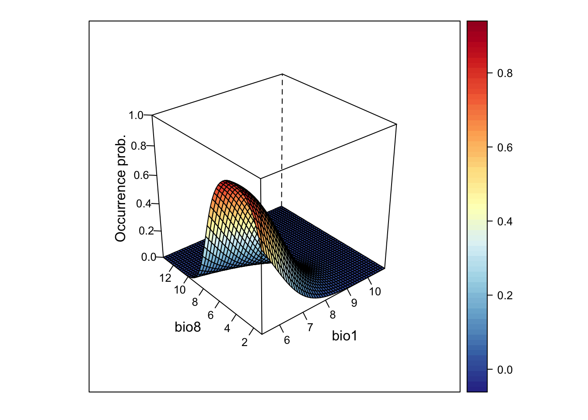
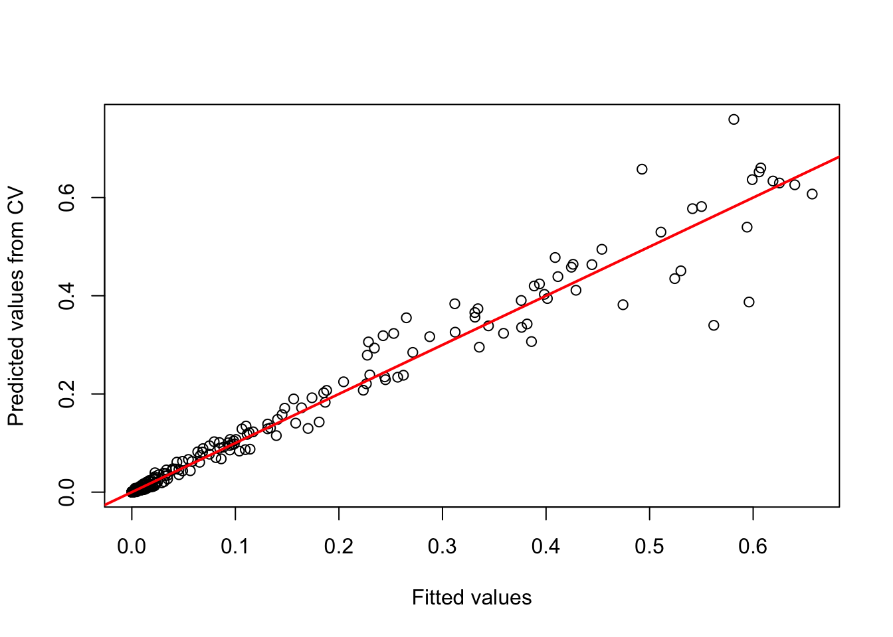
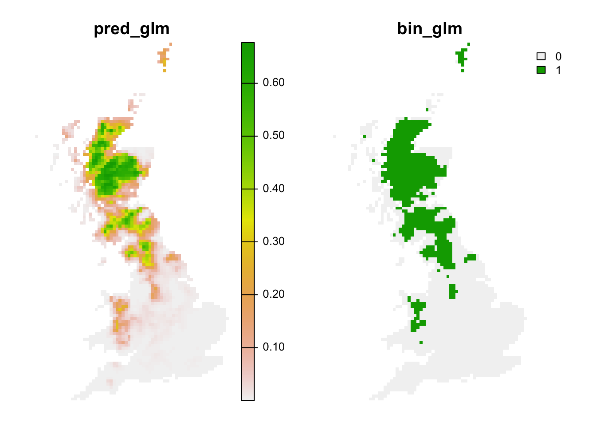
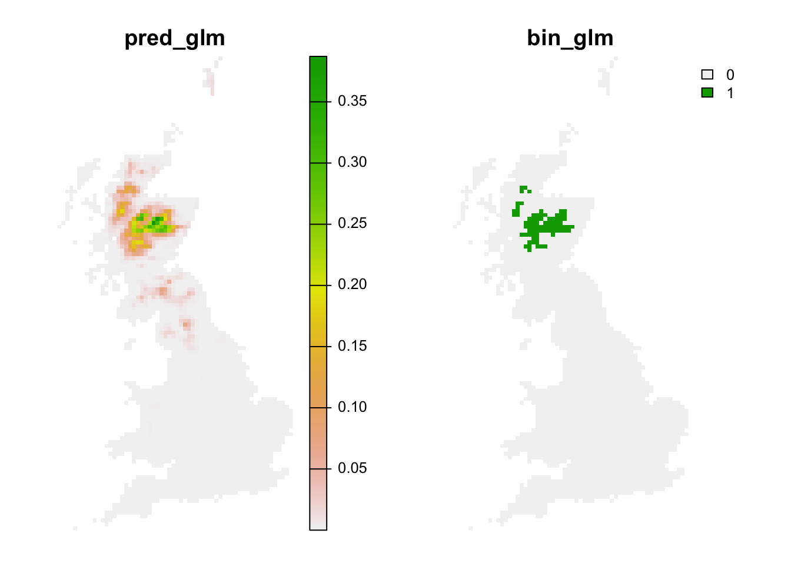
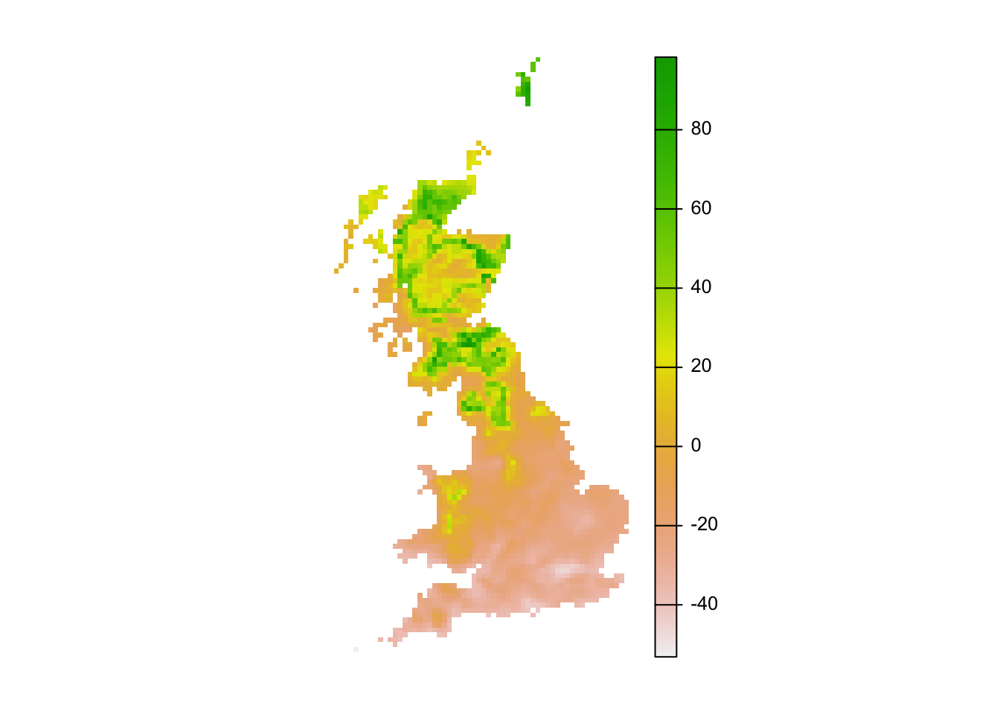
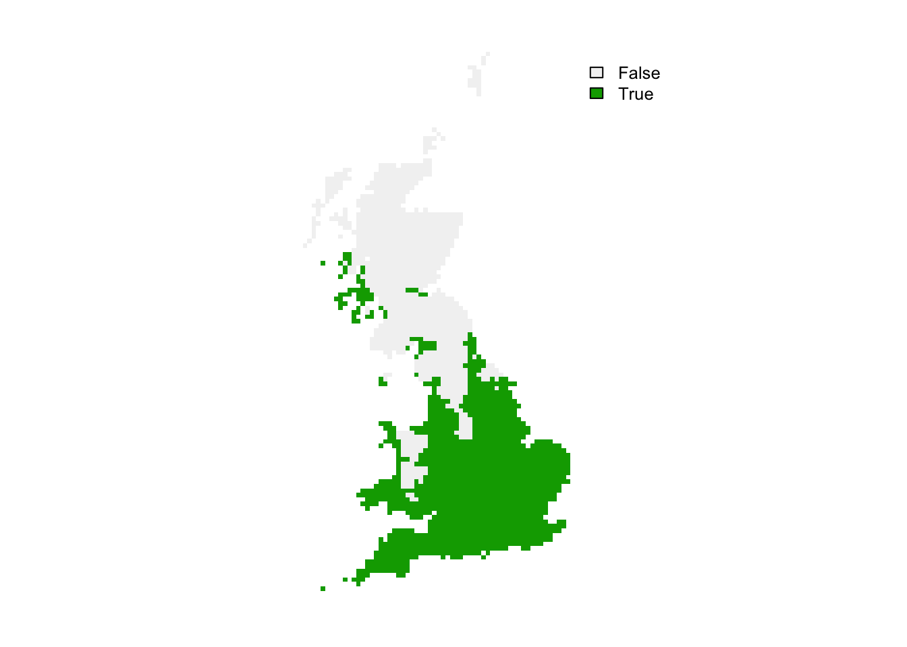
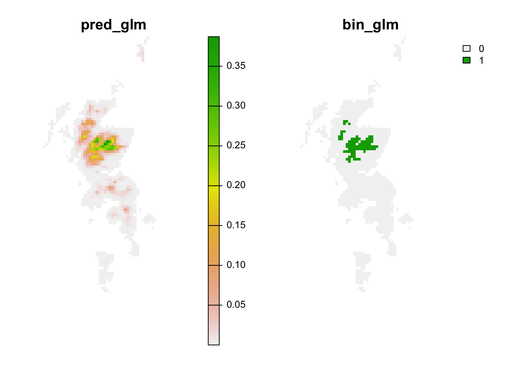

RStudio project
Open the RStudio project that we created in the first session. I recommend to use this RStudio project for the entire course and within the RStudio project create separate R scripts for each session.
# Session b4: SDM assessment and prediction and save the
file in your folder “scripts” within your project folder, e.g. as
“b4_SDM_eval.R”We have already fitted simple species distribution models (SDMs) in the previous tutorial. Remember the five general model building steps: (i) conceptualisation, (ii) data preparation, (iii) model fitting, (iv) model assessment, and (v) prediction (Zurell et al. 2020). In this practical, we will concentrate on steps (iv)-(v). We will learn how to validate SDMs, visualise the fitted species-environment relationships, and make predictions. For getting a deeper understanding of these single steps, I highly recommend studying more advanced reviews (Guisan and Zimmermann 2000; Guisan and Thuiller 2005; Elith and Leathwick 2009) and textbooks on SDMs (Franklin 2010; Guisan, Thuiller, and Zimmermann 2017).
We will continue to work on the Ring Ouzel example of the previous session, using data from the British breeding and wintering birds citizen science atlas (Gillings et al. 2019). Let’s quickly repeat the main steps of data preparation and model fitting:
library(terra)
bg <- terra::rast('data/Prac3_UK_mask.grd')
sp_dat <- read.table('data/Prac3_RingOuzel.txt',header=T)m1 <- step(glm( Turdus_torquatus ~ bio1 + I(bio1^2) + bio8 + I(bio8^2), family='binomial', data=sp_dat))## Start: AIC=132.24
## Turdus_torquatus ~ bio1 + I(bio1^2) + bio8 + I(bio8^2)
##
## Df Deviance AIC
## - bio1 1 122.25 130.25
## - I(bio1^2) 1 122.30 130.30
## - bio8 1 123.64 131.64
## <none> 122.24 132.24
## - I(bio8^2) 1 124.36 132.36
##
## Step: AIC=130.25
## Turdus_torquatus ~ I(bio1^2) + bio8 + I(bio8^2)
##
## Df Deviance AIC
## <none> 122.25 130.25
## - bio8 1 124.86 130.86
## - I(bio8^2) 1 126.00 132.00
## - I(bio1^2) 1 140.38 146.38summary(m1)##
## Call:
## glm(formula = Turdus_torquatus ~ I(bio1^2) + bio8 + I(bio8^2),
## family = "binomial", data = sp_dat)
##
## Deviance Residuals:
## Min 1Q Median 3Q Max
## -1.42982 -0.33815 -0.11284 -0.02967 3.00631
##
## Coefficients:
## Estimate Std. Error z value Pr(>|z|)
## (Intercept) 1.76080 1.66925 1.055 0.29150
## I(bio1^2) -0.10745 0.02917 -3.684 0.00023 ***
## bio8 1.61773 1.04632 1.546 0.12208
## I(bio8^2) -0.20389 0.11734 -1.738 0.08229 .
## ---
## Signif. codes: 0 '***' 0.001 '**' 0.01 '*' 0.05 '.' 0.1 ' ' 1
##
## (Dispersion parameter for binomial family taken to be 1)
##
## Null deviance: 195.68 on 302 degrees of freedom
## Residual deviance: 122.25 on 299 degrees of freedom
## AIC: 130.25
##
## Number of Fisher Scoring iterations: 8Before we can use our model for making predictions in space and time, we need to assess model behaviour and predictive performance.
When only looking at parameter estimates, it is sometimes difficult to envision how exactly the fitted response (the “niche” function) looks like. Also, for more complicated machine learning algorithms (that we will get to know later), there are no parameter estimates to look at, so we need different means to judge the plausibility of the fitted response.
Response curves and response surfaces visualize the (mean) values that a model would predict for an environmental situation, meaning for specific values of the predictor variables. In the Ring Ouzel example, we have only two predictors, so we can simply construct a 3D surface that shows the predicted values along the two environmental gradients.
We can get the predicted values using the predict()
function.
# If we do not provide "newdata", then predict() should simply return the fitted values:
head(predict(m1, type='response'))## 1 2 3 4 5 6
## 8.631855e-02 5.658431e-03 2.207752e-02 2.036298e-02 2.878656e-05 4.897743e-02head(m1$fitted)## 1 2 3 4 5 6
## 8.631855e-02 5.658431e-03 2.207752e-02 2.036298e-02 2.878656e-05 4.897743e-02If we want to predict model response along the two environmental
gradients, we first need to define a grid that contains all combinations
of the two variables. For this, we use a combination of the
expand.grid() and seq() functions.
# Wwe want to make predictions for all combinations of the two predictor variables
# and along their entire environmental gradients:
xyz <- expand.grid(
# We produce a sequence of environmental values within the predictor ranges:
bio1 = seq(min(sp_dat$bio1),max(sp_dat$bio1),length=50),
bio8 = seq(min(sp_dat$bio8),max(sp_dat$bio8),length=50)
)
# Now we can make predictions to this new data frame
xyz$z <- predict(m1, newdata=xyz, type='response')
summary(xyz)## bio1 bio8 z
## Min. : 5.274 Min. : 1.090 Min. :0.0000000
## 1st Qu.: 6.637 1st Qu.: 4.107 1st Qu.:0.0000174
## Median : 8.058 Median : 7.251 Median :0.0023505
## Mean : 8.058 Mean : 7.251 Mean :0.1112626
## 3rd Qu.: 9.478 3rd Qu.:10.395 3rd Qu.:0.0881662
## Max. :10.841 Max. :13.413 Max. :0.8785273# As result, we have a 3D data structure and want to visualise this.
# Here, I first set a color palette
library(RColorBrewer)
cls <- colorRampPalette(rev(brewer.pal(11, 'RdYlBu')))(100)
# Finally, we plot the response surface using the wireframe function from the lattice package
library(lattice)
wireframe(z ~ bio1 + bio8, data = xyz, zlab = list("Occurrence prob.", rot=90),
drape = TRUE, col.regions = cls, scales = list(arrows = FALSE), zlim = c(0, 1))
# We can also rotate the axes to better see the surface
wireframe(z ~ bio1 + bio8, data = xyz, zlab = list("Occurrence prob.", rot=90),
drape = TRUE, col.regions = cls, scales = list(arrows = FALSE), zlim = c(0, 1),
screen=list(z = -160, x = -70, y = 3))This looks very nice. However, if the model gets more complicated and contains more variables than just two, how can we then visualise it?
One way is to cut the response surface into slices. Most often, we
simply plot the response along one environmental gradient while keeping
all other gradients constant at their mean. We call this
partial response plots. For simplicity, we can
use the function partial_response() from the
mecofun package for plotting.
library(mecofun)
# Names of our variables:
my_preds <- c('bio1', 'bio8')
# We want two panels next to each other:
par(mfrow=c(1,2))
# Plot the partial responses
partial_response(m1, predictors = sp_dat[,my_preds], ylab='Occurrence probability')When you compare the response surface and the partial response curves, you see that the latter only give us an incomplete picture of what is going on as they are only “slicing” the response surface in the middle.
Exercise:
Fit a GLM with only two different (weakly correlated) predictor
variables for the Yellowhammer data (previous prac) and store as object
(e.g. as m_yellowhammer). Plot the response surface, and
the partial response curves.
In the previous session, we already learned about the measure “explained deviance” that tells us something about the goodness-of-fit, meaning how well the model fits the data.
expl_deviance(obs = sp_dat$Turdus_torquatus,
pred = m1$fitted)## [1] 0.3752566Here, our two-predictor model explains roughly 40% of the variance in the data. However, often we are not only interested in how well our model fits the data but how robust the model is against changes in the input data and, thus, how robust predictions to other places and times might be. This assessment of model performance is often referred to as validation or evaluation. Evaluating the model on the calibration or training data is often referred to as internal validation (“resubstitution”) (Araujo et al. 2005). This generally gives a too optimistic picture of model performance. It is better to evaluate the model using data that have not been used for model fitting. One way is to split the data and only train the model on some proportion of the data and validate it on the hold-out data. Potential procedures are repeated split-samples (e.g. splitting into 70% training and 30% test data and repeat several times) and k-fold cross-validation (e.g. 5-fold or 10-fold), where the data are split into k portions, the kth portion is held out for validation and the procedure is repeated k times. If these folds are stratified in geographic or environmental space, we talk of spatial block cross-validation and environmental block cross-validation (Roberts et al. 2017).
Here, we will use the function crossvalSDM() from the
mecofun package to split our data into 5 folds,
re-calibrate the model using only 4/5 of the original data and predict
the model to the hold-out 1/5 of the data.
preds_cv <- crossvalSDM(m1, traindat = sp_dat, colname_species = 'Turdus_torquatus', colname_pred = my_preds)We receive a numeric vector of cross-validated prediction. Out of curiosity, let us compare the fitted values on the training data and the predictions on the cross-validation data. You should see that the predictions are similar (this is good, otherwise our model would be very sensitive to changes in input data) but not identical - thus, we have basically added some noise.
plot(m1$fitted.values, preds_cv, xlab='Fitted values', ylab='Predicted values from CV')
abline(0,1,col='red',lwd=2)
We will use these cross-validated predictions to assess model performance.
Now, we want to know how well our model predicts the observations.
Different measures are available for quantifying this. A lot of these
measures are threshold-dependent. You have probably realised that our
model predicts a continuous response, the probability of occurrence,
while our observations are binary. Many performance measures rely on
comparisons like “How many presence observations does the model
correctly predict as presence”. In order to answer this we first need to
convert the continuous probabilities into binary predictions. Different
thresholds are introduced in Liu et al.
(2005). Most of these are implemented in the
PresenceAbsence package in the
optimal.thresholds function.
library(PresenceAbsence)
# We first prepare our data:
# Prepare cross-validated predictions:
thresh_dat <- data.frame(
ID = seq_len(nrow(sp_dat)),
obs = sp_dat$Turdus_torquatus,
pred = preds_cv)
# Then, we find the optimal thresholds:
(thresh_cv <- PresenceAbsence::optimal.thresholds(DATA= thresh_dat))## Method pred
## 1 Default 0.5000000
## 2 Sens=Spec 0.1550000
## 3 MaxSens+Spec 0.1550000
## 4 MaxKappa 0.2200000
## 5 MaxPCC 0.5300000
## 6 PredPrev=Obs 0.3700000
## 7 ObsPrev 0.0990099
## 8 MeanProb 0.1001586
## 9 MinROCdist 0.1550000
## 10 ReqSens 0.1600000
## 11 ReqSpec 0.1500000
## 12 Cost 0.5300000We can compare observed vs. predicted presences and absences based on
these tresholds. For this, we take our predictions from the
cross-validation. The comparison is easiest illustrated in a confusion
matrix, for example using the function cmx in the
PresenceAbsence package.
Have a look at Liu et al. (2005) to see which thresholds they recommend. Here, we will use the threshold that maximises the sum of sensitivity and specificity (the third row in the thresholds data frame):
(cmx_maxSSS <- PresenceAbsence::cmx(DATA= thresh_dat, threshold=thresh_cv[3,2]))## observed
## predicted 1 0
## 1 26 40
## 0 4 233From such a confusion matrix, we can calculate different evaluation
criteria. For example,
- the proportion of correctly classified test observations
pcc
- the proportion of correctly classified presences, also called
sensitivity or true positive rate
- the proportion of correctly classified absences, also called
specificity or true negative rate
# Proportion of correctly classified observations
PresenceAbsence::pcc(cmx_maxSSS, st.dev=F)## [1] 0.8547855# Sensitivity = true positive rate
PresenceAbsence::sensitivity(cmx_maxSSS, st.dev=F)## [1] 0.8666667# Specificity = true negative rate
PresenceAbsence::specificity(cmx_maxSSS, st.dev=F)## [1] 0.8534799Other measures are Kappa and TSS (the true skill statistic). Allouche, Tsoar, and Kadmon (2006) explain how to calculate these.
# Kappa
PresenceAbsence::Kappa(cmx_maxSSS, st.dev=F)## [1] 0.4694365# True skill statistic
TSS(cmx_maxSSS) ## [1] 0.7201465According to Araujo et al. (2005), Kappa>0.4 indicate good predictions. For TSS, we often assume TSS>0.5 to indicate good predictions.
The most common evaluation statistic that avoids thresholding the data is AUC - the area under the receiver-operating characteristic (ROC) curve. ROC curves are generated by calculating sensitivity (true positive rate) and specificity (true negative rate) for many thresholds along the entire range of predicted probabilities. Then, (1-specificity) is plotted on the x-axis against sensitivity on the y axis. The area under this curve is called the AUC. The further the generated curve deviates from the 1:1 line towards the upper-left corner, the better the model predicts presence/absence of a species. If we would take a random presence and a random absence from our observations and make predictions, than AUC can be interpeted as the chance of assigning a higher predicted occurrence probability to the presence compared to the absence point. Typically, we regard AUC>0.7 as indicating fair predictions (Araujo et al. 2005).
library(AUC)
# Let's have a look a the ROC curve:
roc_cv <- roc(preds_cv, as.factor(sp_dat$Turdus_torquatus))
plot(roc_cv, col = "grey70", lwd = 2)# Compute the AUC:
AUC::auc(roc_cv)## [1] 0.9042735It seems our model is performing pretty well on hold-out data. We can thus attempt making predictions in space and time.
Please be aware that many packages contain functions for evaluating
SDMs. As always you have to find your own way. Here, I provide merely
examples. To ease further performance assessments during this course,
the mecofun package contains a function
evalSDM() that computes the here-mentioned performance
measures. By default, this function uses the MaxSens+Spec
threshold.
evalSDM(sp_dat$Turdus_torquatus, preds_cv)## AUC TSS Kappa Sens Spec PCC D2 thresh
## 1 0.9042735 0.7201465 0.4694365 0.8666667 0.8534799 0.8547855 0.3507918 0.155Exercise:
Use the m_yellowhammer model from the previous exercise
and assess the TSS, sensitivity, specificity, and AUC.
m1 or
m_yellowhammer) has a higher predictive performance?We have already learned how to make predictions using the function
predict() and also using the argument newdata.
All we need for transferring our model to other places and times are the
respective environmental variables.
As you have learned in the previous sessions, we can download current
and future climate layers from databases such as WorldClim and CHELSA. When making predictions,
we have to take care that the target environmental layers match the
scale of analysis. Our species data were available at a 10 km spatial
resolution based on the British National Grid. We aim to predict our
model to climate layers based on the worldclim data base, which offers
the data at different resolutions in geographic (lon/lat) projection.
The appropriate worldclim spatial resolution would be the 5 min
resolution. As a necessary step, we need to reproject these climate
layers to the British National Grid. Below, I show you how this could be
done. Alternatively, you can also download the processed climate layers
here (or from the moodle) and read
them in using the terra::rast() function.
We use the geodata package for downloading worldclim
data. As we only want to retrieve the data for UK, we can use the
geodata::worldclim_country() function for the current
climate. We download data for the current climate as well as a future
scenario for the year 2050.
library(geodata)
# Please note that you have to set download=T if you haven't downloaded the data before:
bio_curr <- geodata::worldclim_country('GB', var = 'bio', res = 5, download = F, path = 'data')
# Please note that you have to set download=T if you haven't downloaded the data before:
bio_fut <- geodata::cmip6_world(model='ACCESS-ESM1-5', ssp='245', time='2041-2060', var='bioc', download=F, res=5, path='data')We will use the background mask of UK to clip the data. This mask is in the British National Grid, which is the target coordinate system, and we thus need to reproject the worldclim layers. To speed things up, we will first crop the climate layers.
# the approx. spatial extent of UK in lon/lat coordinates
extent_uk <- c(-12, 3, 48, 62)
# Crop and reproject current climate
bio_curr <- terra::crop(bio_curr, extent_uk)
bio_curr <- terra::project(bio_curr, bg)
bio_curr <- terra::mask(bio_curr, bg)
# Crop and reproject future climate
bio_fut <- terra::crop(bio_fut, extent_uk)
bio_fut <- terra::project(bio_fut, bg)
bio_fut <- terra::mask(bio_fut, bg)The problem now is that the current and the future climate layers
have different variable names than our original species data frame. The
function predict() will only work if all have the same
names as in the model specification. We thus have to change the climate
layer names.
# Change names of climate layers
names(bio_curr) <- names(bio_fut) <- names(sp_dat)[-c(1:3)]Store the layers for later use:
writeRaster(bio_curr, 'data/Prac4_UK_bio_curr.grd')
writeRaster(bio_fut, 'data/Prac4_UK_bio_fut.grd')It is now straight forward to make continuous predictions to the current and the future climate:
# Prepare data frames
bio_curr_df <- data.frame(crds(bio_curr),as.points(bio_curr))
bio_fut_df <- data.frame(crds(bio_fut),as.points(bio_fut))
# Make continuous predictions:
bio_curr_df$pred_glm <- predict(m1, newdata= bio_curr_df, type="response")
bio_fut_df$pred_glm <- predict(m1, newdata= bio_fut_df, type="response")Of course, we can also plot the predictions:
par(mfrow=c(1,2))
# Make raster of predictions to current environment:
r_pred_curr <- terra::rast(bio_curr_df[,c('x','y','pred_glm')], type='xyz', crs=crs(bg))
plot(r_pred_curr, axes=F, main='Occ. prob. - today')
# Make raster stack of predictions to future environment:
r_pred_fut <- terra::rast(bio_fut_df[,c('x','y','pred_glm')], type='xyz', crs=crs(bg))
plot(r_pred_fut, axes=F, main='Occ. prob. - 2050')We see that ring ouzel is predicted to decline under the chosen climate scenario.
Lastly, we can also translate the continuous predictions into binary predictions and plot the resulting maps.
# Make binary predictions:
bio_curr_df$bin_glm <- ifelse(bio_curr_df$pred_glm >= thresh_cv[3,2], 1, 0)
bio_fut_df$bin_glm <- ifelse(bio_fut_df$pred_glm >= thresh_cv[3,2], 1, 0)
# Make raster stack of predictions to current environment:
r_pred_curr <- terra::rast(bio_curr_df[,c('x','y','pred_glm','bin_glm')], type='xyz', crs=crs(bg))
plot(r_pred_curr, axes=F)
# Make raster stack of predictions to future environment:
r_pred_fut <- terra::rast(bio_fut_df[,c('x','y','pred_glm','bin_glm')], type='xyz', crs=crs(bg))
plot(r_pred_fut, axes=F)
Exercise:
Use the m_yellowhammer model from the previous exercise
and make predictions to current and future climates.
Novel environments are conditions that were not realised in the
sampled data but are realised in the projection data. For example, in
the future it may be warmer than today. If the entire niche of the
species is encompassed by data, then the model does not need to
extrapolate even if the projection data contain some novel environments.
Mostly, novel environments only prove problematic if the niche is
truncated in the sampled data (Zurell, Elith, and
Schroeder 2012). Novel environments can be assessed in different
ways. MESS (Multivariate environmental similarity surface) maps are
contained in the predicts package and described in Elith, Kearney, and Phillips (2010). They assess
for each environmental variables separately whether the projection data
contain novel conditions beyond the sampled range.
library(predicts)
# MESS maps from the predicts package:
r_mess <- mess(bio_fut[[my_preds]], sp_dat[,my_preds])
plot(r_mess, axes=F)
# Negative values indicate dissimilar=novel environments:
r_mess_mask <- r_mess < 0
plot(r_mess_mask, axes=F)
From these maps, we can already see that novel environments should not be any issue for the ring ouzel as novel environments could mainly arise in the South while the Ring Ouzel is a northern distributed species. Nevertheless, we can further explore model projections for analogous climates versus novel climates:
# Predictions to analogous climates:
r_analog_fut <- terra::extend(r_pred_fut, bg)
values(r_analog_fut)[values(r_mess)<0] <- NA
plot(r_analog_fut, axes=F)
# Predictions to novel climates:
r_novel_fut <- terra::extend(r_pred_fut, bg)
values(r_novel_fut)[values(r_mess)>=0] <- NA
plot(r_novel_fut, axes=F)